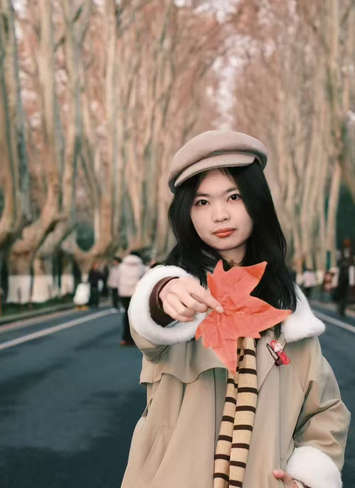
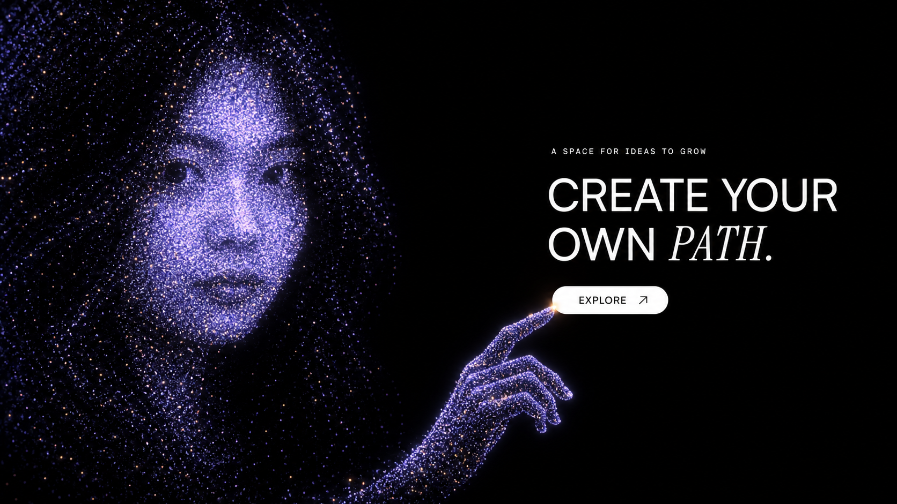
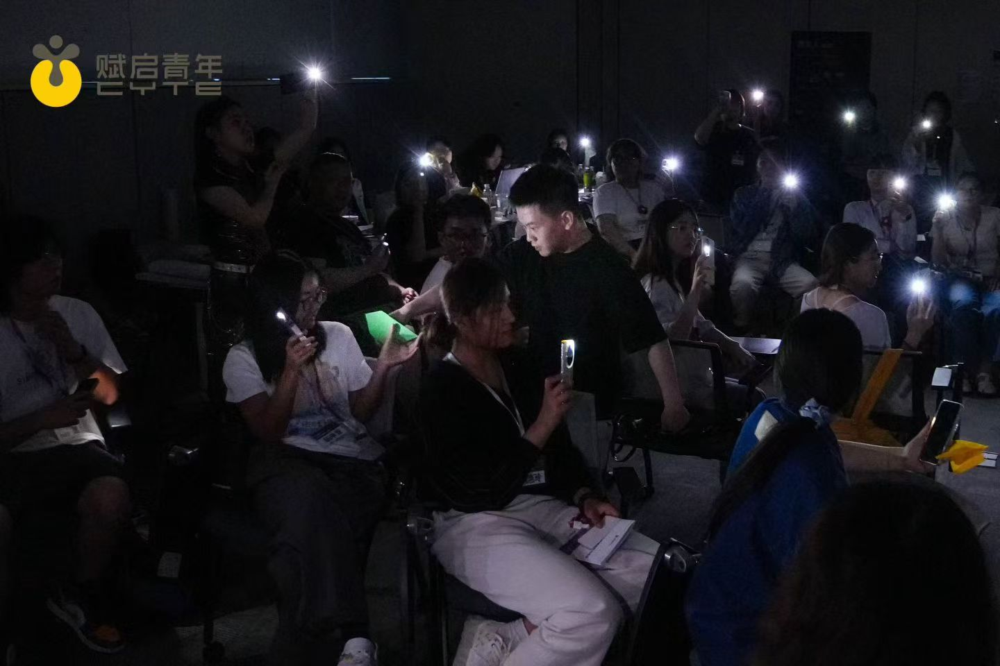
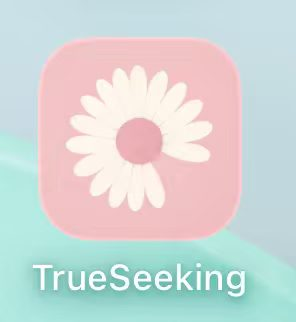

第一章 · 下潜 / 一张写给第一次相遇的名片
紫米露 / Luu · 私人手记从一块已经因久置
从一块已经因久置
而干瘪的馒头
慢慢回到 刚出炉时
松松软软的模样
这就是创作带给我的感受

叶蕊睿 / Luu · 个人名片叶蕊睿
持续进化的青年创作者
正在尝试
✶从参与者转向发起人
从感受转向创作
也可以点击名片以外，进入宇宙
Luu 的一小片内心海
有些会散开，有些想再待一会儿。
可以戳一颗，也可以让它们待着。
往里走 · 下潜第一章 · 下潜 / 一张写给第一次相遇的名片
这就是创作带给我的感受

叶蕊睿 / Luu · 个人名片持续进化的青年创作者
从参与者转向发起人
从感受转向创作
也可以点击名片以外，进入宇宙

叶蕊睿 / Luu · 还在生长
从旁观到参与，再到共创与发起。
我想像鱼那样游入自己的海洋
我想像星那样撞上自己的星系
02 / Luu 的作品集
文字、画笔，以及在共创中留下的东西。
我后知后觉发现，原来处在不同的人群中间，我的创造状态并不相同。同样是“画画”，一个人自己画，和四个人在48小时里为了同一个游戏一起做东西，是完全不同的体验。
这次的游戏开发更像是一个起点，在后来的无数次回忆中提醒着我：一个共创、高反馈、不断生长的环境，会把一个人潜在的创造欲与生命力调动出来。
03 / 画作集 · 2025.7 THE FIRST SOLO TRIP
九张绘本，随着你的滚动，一页页向你靠近。
向下滚动，让下一页飞来 ↓
向下滚动，画页向左；向上滚动，回看上一张。每张都可以点开放大。
01 / 随笔筏 · 十六篇随笔

2026.5—6 / 青年营队
你拼命护住的小火苗，也会在某时保护你。
营队的相处时光让我体会到人与人链接的奇妙感觉，譬如大家围坐吃了史上最久的橘子，橘香四溢；譬如某位姐姐曾在围炉夜话中满是真诚的对我说像是看到了过去的自己，第一次来到这里还是会很谨慎；又或者是意料之外的明信片与纸飞机，无需言说只是感受身体与心灵的流动，这种感觉滋养着我。
AI / 落到真实问题上
我在用 AI 整理作品、搭建页面，也在持续修改你正在看的这个网站。
从第一张名片再看一遍 ↗
尝试与队友开发一个降低 AI 幻觉的小程序。这里先展示项目标识；功能、演示与验证材料待补充。
2026.8 / 云南哈尼夏令营
课堂作品与课程复盘还在整理。先留下相遇的现场。
第一次面对这样的一群孩子，我会局促会忐忑，但还好我也坚持做了下去，种星星吗，我想我看到许多星星在升起。
2026.9 / 发起校园活动 · 进行中
先把问题摆到校园里。邀请人用贴纸、手写和对话回应，再决定下一步怎样做。
改变的契机往往藏在
进入一个感到安全与接纳的环境后
悄悄长出来的
我想要创造的
是一个让人安全表达的“入口”，让真实能够自然流露
5 月底参加赋启活动时，一位前辈说的其他话我早已模糊，唯有一句又在数月后回响：
勇气来源于内心有想守护的东西。
那时候我只是懵懵懂，但这句话还是让我若有所思，于是扎根直到现在慢慢露出苗头。我开始认出自己想要守护的东西，是内心的平静、柔软、孩童般的好奇。于是相应的，骨骼在一点点生长，我也更加清楚，自己可以怎样给到支持。
最近有没有哪一刻，你虽然有点怕，还是做了？
这杯酒目前只存于本浏览器，不会发送给 Luu 或其他访客；可下载留存。
只有当前浏览器可见；清除浏览器数据后会丢失。
回响星图 / 2026.06—09
走过这些相遇与尝试，我也开始回读过去的自己。
我想不断积累各个时空来自于我的视角，也是一种多个时空的我在共同合作，共同帮助现在的我吧。
一段当时的文字
从一颗星开始
点击关键词，读一小段原文。
两条轨道交织，也继续向未知延伸。
亮起的回线标记真实回访；其他连接是放在一起阅读的主题呼应。
风从四面八方来，我向四面八方走。
带走一片微光 ↓出口 · 微光收集器
晒太阳、散步、画画、认真聊天。这里放着我写下的 35 件恢复能量的小事。
在窗边慢慢感受阳光